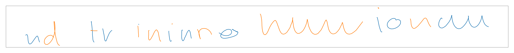
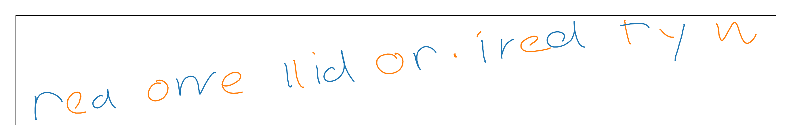

Walkthrough¶
Preparations¶
$ bash setup_anaconda.sh
- This downloads miniconda3, saves it to the $HOME folder and installs all the libraries needed in a virtual environment.
- It detects a CUDA installation and installs the cuda version of pytorch if CUDA is detected.
- This needs to be run only once
To activate the virtual environment:
$ bash virtualenv.sh
- This needs to be run before every session
Training¶
Possible options are given in conf.py:
parser.add_argument('--train_unconditional', action="store_true", help="Train RNN for unconditional generation")
parser.add_argument('--train_conditional', action="store_true", help="Train RNN for conditional generation")
parser.add_argument('--validate_unconditional', action="store_true", help="validate unconditional RNN")
parser.add_argument('--validate_conditional', action="store_true", help="validate conditional RNN")
parser.add_argument('--debug', action="store_true", help="Activate debugging options (mostly plotting)")
#######################
# Model saving
#######################
parser.add_argument('--unconditional_model_path', type=str,
default="models/unconditional.pt", help="Path where to save/load a model")
parser.add_argument('--conditional_model_path', type=str,
default="models/conditional.pt", help="Path where to save/load a model")
######################
# Model parameters
######################
parser.add_argument('--layer_type', default="lstm", type=str, choices=["gru", "lstm"], help="Model type")
parser.add_argument('--hidden_dim', default=256, type=int, help="Hidden layer dimension")
parser.add_argument('--num_layers', default=2, type=int, help="Number of recurrent layers")
parser.add_argument('--recurrent_dropout', default=0, type=float, help="Dropout on recurrent layers")
parser.add_argument('--n_gaussian', type=int, default=20, help='# of gaussian mixture components')
parser.add_argument('--n_window', type=int, default=10, help='# of gaussian window for conditional model')
######################
# Optimizer parameters
######################
parser.add_argument('--optimizer', default="adam", type=str, choices=["adam", "rmsprop"], help="Learning rate")
parser.add_argument('--learning_rate', default=1E-3, type=float, help="Learning rate")
parser.add_argument('--gradient_clipping', default=5, type=float, help="Max norm allowed for a gradient")
######################
# Training parameters
######################
parser.add_argument('--use_cuda', action="store_true", help="Use GPU (pytorch backend only)")
parser.add_argument('--nb_epoch', default=100, type=int, help="Number of batches per epoch")
parser.add_argument('--batch_size', default=64, type=int, help='Batch size')
parser.add_argument('--n_batch_per_epoch', type=int, default=100, help='Number of batches per epoch')
parser.add_argument('--bptt', type=int, default=150, help='sequence length')
######################
# Inference parameters
######################
parser.add_argument('--sampling_len', type=int, default=700, help='Max size of sequence to sample from')
parser.add_argument('--bias', type=float, default=1.0, help='Bias when sampling')
Train an unconditional model with:¶
$ python main.py --train_unconditional
Train an conditional model with:
$ python main.py --train_uonditional
During training, images are saved to the figures directory.
Example figure for unconditional training:
Early on it does not look like much:

Later on we start to get full-fledged letters:
Until we get words which make some sense:
Train an unconditional model with:
$ python main.py --train_unconditional
Train a conditional model with:¶
$ python main.py --train_conditional
During training, images are saved to the figures directory.
- The top row shows the attention result : the sliding gaussian window on the top left and the letters that are being highlighted.
- The middle row shows the sampled stroke and the corresponding 2D density
- The bottom row shows the sampled stroke, with a different color each time a new stroke is sampled.
Example figure for unconditional training:
Early on, not much to be seen:

Later on we start to an alignment and letter can be recognized:

Until we get something legible:

Validation¶
Validate an unconditional model with:¶
$ python main.py --validate_unconditional --unconditional_model_path XXX
This will create several plots (identical to the ones during training) and save them to figures/validation for inspection
Validate an conditional model with:¶
$ python main.py --validate_conditional --conditional_model_path XXX
This will ask the user for an input text:
$ Enter text:
The user can now enter the input text (will throw an error for unsupported characters)
$ Enter text: an input string
Then press enter, the string will be generated and saved to figures/validation for inspection. This loops indefinitely until ctrl+C